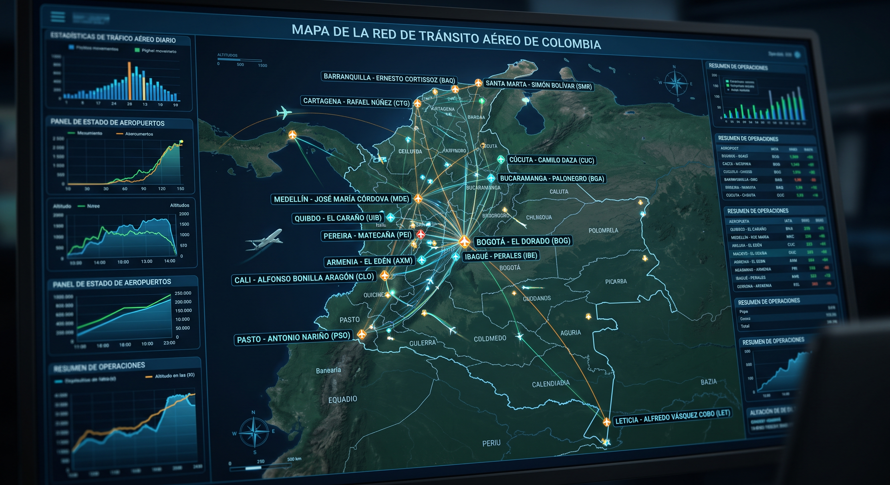
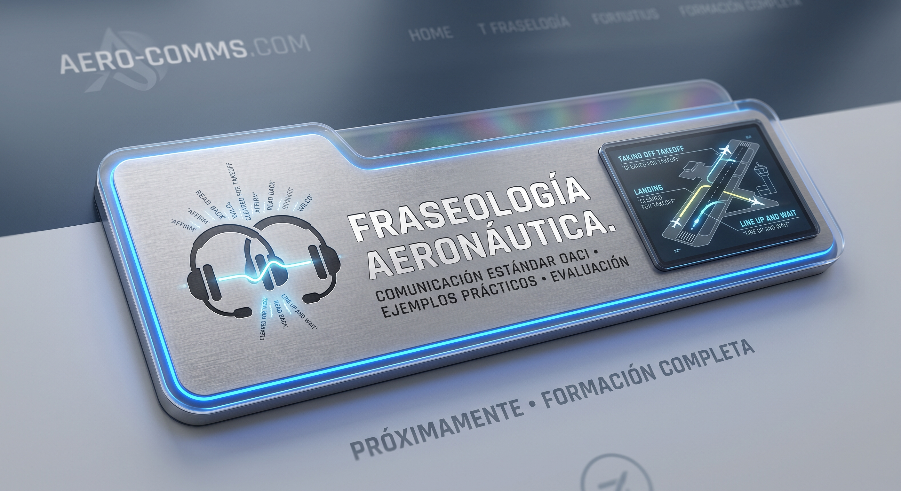
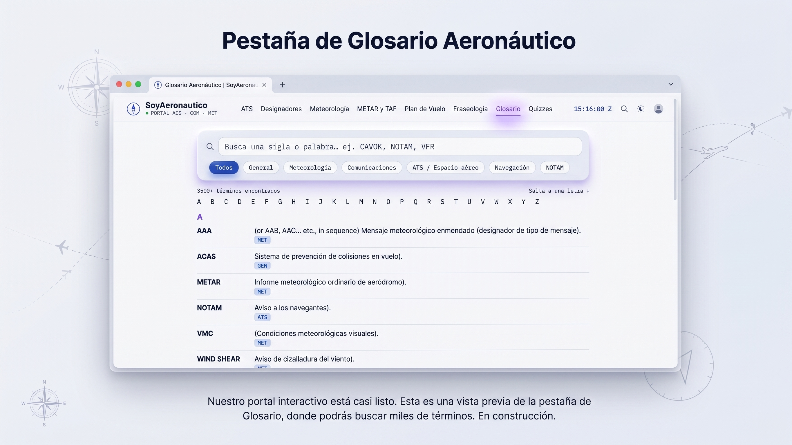
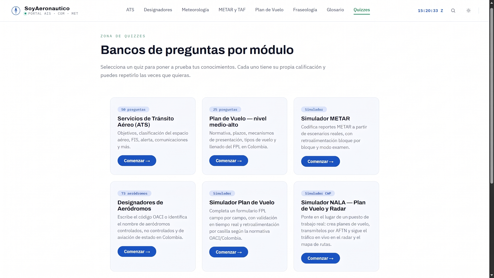

Siete frentes, un solo parcial.
Cada módulo trae guías, glosario cruzado y su propio banco de preguntas.
Meteorología Aeronáutica
Clasificación de nubes, fenómenos significativos y lectura completa de reportes METAR/TAF — la misma lógica del panel de consulta en vivo de arriba.
Estudiar el módulo →Servicios de Tránsito Aéreo
ATC, FIS, ACC/APP/TWR/AFIS y los objetivos de cada servicio.
Estudiar el módulo →
DESDesignadores de Lugar
Más de 1.000 indicadores ICAO de aeródromos colombianos, filtrables por departamento.
Explorar → FPL
FPL
Plan de Vuelo
Información detallada para el diligenciamiento correcto de cada casilla del FPL.
Estudiar el módulo →
FRAFraseología Aeronáutica
Fraseología OACI estándar, fases de vuelo, emergencias y coordinación ATC — con quizzes de voz para practicar el readback hablando.
Practicar en voz →
GLOGlosario Aeronáutico
NOTAM, RVSM, PBN y demás términos técnicos, buscables al instante.
Buscar términos →
QUIZona de Quizzes
Bancos de preguntas por módulo con calificación inmediata para tu autoevaluación.
Hacer quizzes →